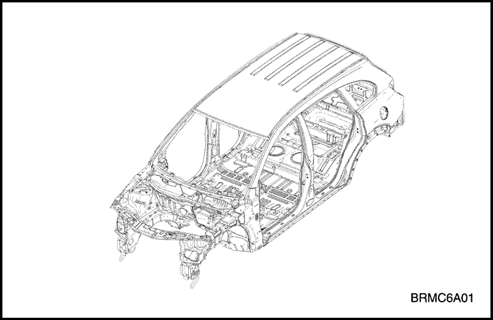
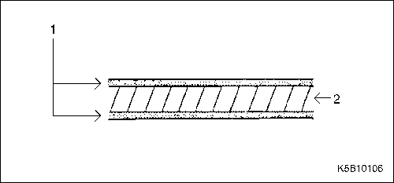
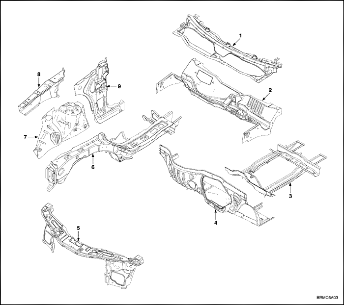
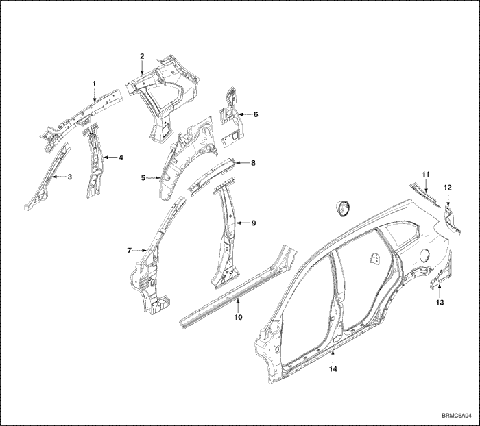
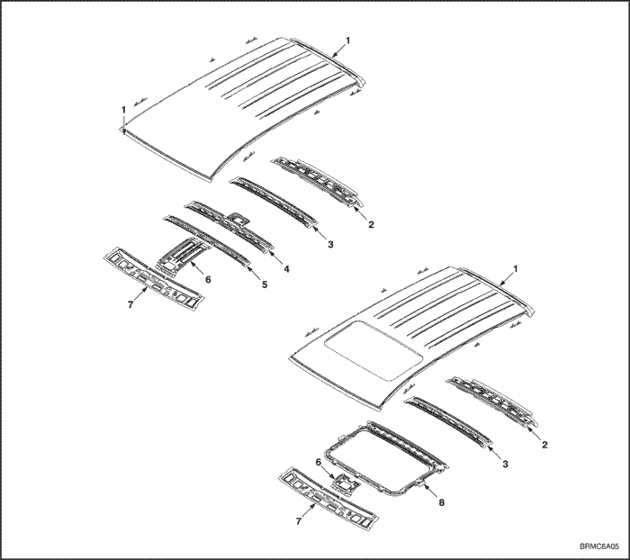
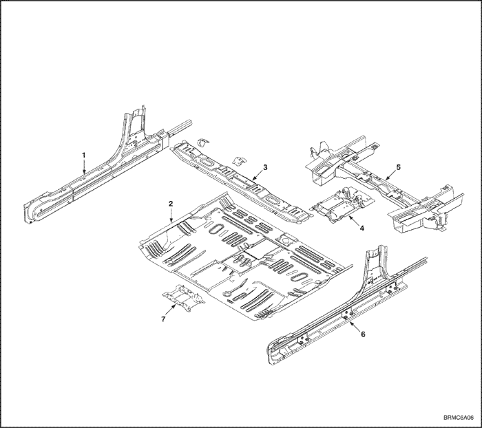
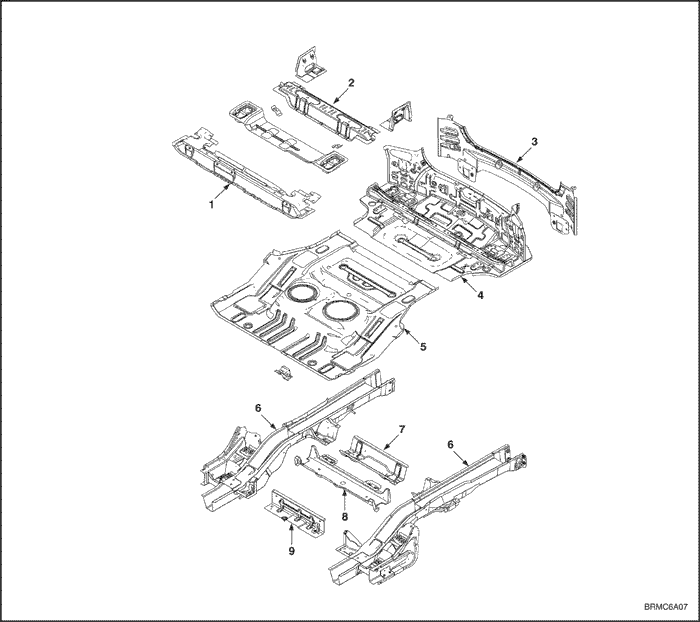

ОБЩАЯ ИНФОРМАЦИЯ
ОБЩИЕ ИНСТРУКЦИИ
Данное
руководство предназначено для специалистов по ремонту кузовов и
призвано помочь им в работе. На протяжении истории автомобиля
конструкция кузова значительно менялась. По мере технического
совершенствования автомобилей возникали и новые требования к конструкции
кузова, вызванные необходимостью согласования, казалось бы,
несовместимых потребностей, как-то:
- прочность и безопасность - и малая масса
- большой объем - и хорошая аэродинамика
- высокое качество - и низкая цена
Не менее важны также долговечность и простота ремонта кузова.
Сегодня
применение высокоавтоматизированного производственного оборудования
позволяет выдерживать самые жесткие допуски и тем самым обеспечивать
высочайшее качество.
В
случае повреждения кузова автомобиля клиент с полным основанием
ожидает, что он будет отремонтирован высококвалифицированными
специалистами с соблюдением тех же стандартов качества.
В
то же время в интересах безопасности клиента вы должны обладать
исчерпывающим знанием материалов, методов измерения и правки, возможных
деформаций, оптимальных методов предотвращения коррозии и многих других
вещей.
Данное
руководство поможет вам обновить ваши знания и даст вам представление о
том, что необходимо для устранения повреждений в результате умеренных и
серьезных аварий, с максимальной безопасностью для вас и к
максимальному удовлетворению ваших клиентов.
ВАЖНОЕ УВЕДОМЛЕНИЕ О БЕЗОПАСНОСТИ
ПЕРЕД НАЧАЛОМ РАБОТ
- Отсоедините аккумулятор, чтобы уменьшить вероятность возгорания в результате короткого замыкания электропроводки.
- Проверьте, нет ли утечек топлива, и при необходимости устраните их.
- Если предстоит использовать сварочное оборудование рядом с топливной системой, снимите топливный бак и/или топливопроводы.
- Перед сваркой, шлифовкой или резкой защитите коврики и сиденья несгораемыми чехлами.
- При работе с токсичными или огнеопасными жидкостями соблюдайте стандартные правила техники безопасности.
- При окраске с помощью пульверизатора, сварке, резке, шлифовке или обтачивании используйте стандартные защитные приспособления. Стандартные защитные приспособления - это, в частности:
- Респираторы и фильтрующие маски: Обеспечивают защиту от токсичного дыма, тумана, пыли и других взвешенных в воздухе частиц. Используйте респиратор или фильтрующую маску, соответствующие вредным воздействиям конкретной работы: например, некоторые модели обеспечивают фильтрацию только пыли и взвешенных в воздухе частиц, но не токсичных дымов.
- Защитные очки: Защищают глаза от летящих предметов, частиц пыли и брызг жидкости.
- Перчатки/рукавицы: Резиновые перчатки защищают от воздействия едких жидкостей. Рукавицы сварщика защищают от ожогов и травм при сварке, шлифовке или обточке.
- Защитная обувь: Нескользящая подошва предохраняет от поскальзывания. Металлическая обивка носка защищает от падающих предметов.
- Затычки для ушей: Защищают барабанные перепонки от вредного воздействия сильного шума.
ВО ВРЕМЯ РАБОТЫ
- Не курите при работе вблизи топливной системы.
- Складывайте тряпки, пропитанные бензином или растворителем, в контейнер установленного образца.
- Не пользуйтесь для очистки тормозных узлов струей воздуха: используйте только пылесос рекомендованного типа и надевайте рекомендованную фильтрующую маску или респиратор.
- Используя гидроцилиндр или правильный стенд, всегда прикрепляйте страховочный трос. Не стойте на одной прямой с цепями, которые применяются в подобном оборудовании.
БЕЗОПАСНОСТЬ КУЗОВА
Современные
несущие кузова конструируются таким образом, чтобы создать вокруг
пассажира жесткую зону, защищенную передней и задней зонами смятия.
- В случае аварии зоны смятия поглощают энергию удара, превращая ее в работу деформации.
- Форма, материал и толщина металла должны точно соблюдаться.



- Многолетний опыт, совершенные вычислительные методы и многочисленные серии краш-тестов позволяют нам сегодня выпускать кузова с оптимальным режимом деформации в зонах смятия при лобовом или заднем ударе.
Поэтому
при ремонте кузова обязательно необходимо восстанавливать
первоначальную конструкцию и прочность, чтобы гарантировать безопасность
пассажиров автомобиля.
НАГРУЗКИ НА ДЕТАЛИ КУЗОВА
- Существовавший в прошлом принцип деления частей автомобиля на несущие и ненесущие, на шасси и кузов, сегодня не оправдывает себя. Каждая часть автомобиля, даже окна, вносит свой вклад в общую прочность автомобиля.
Поэтому применительно к современным кузовам DAEWOO можно говорить скорее о более нагруженных и менее нагруженных частях.
ПРИМЕНЕНИЕ НОВЫХ ВЫСОКОКАЧЕСТВЕННЫХ МАТЕРИАЛОВ
- Необходимость снижения массы кузова привела к уменьшению количества используемой стали, в частности, за счет применения более тонкого листа. Сделать это несмотря на необходимость повышения прочности кузова стало возможно благодаря применению ВЫСОКОПРОЧНЫХ ЛИСТОВЫХ СТАЛЕЙ. Высокопрочные стали превосходят обычную сталь по прочности на растяжение и сдвиговой прочности на величину до 30%. Эти характеристики не должны быть нарушены при ремонте, например, в результате чрезмерного нагревания.
ЗАЩИТА ОТ КОРРОЗИИ
- Долговечность кузова, его безопасность и сохранение качества в долгосрочной перспективе вы значительной степени зависят от антикоррозийной защиты листового металла. Этому вопросу мы также удаляем большое внимание при производстве.
- Соответственно эту защиту от коррозии необходимо сохранять и восстанавливать при выполнении ремонта.
КРАТКОЕ ЗАКЛЮЧЕНИЕ
- Все наши автомобили производятся в соответствии с высочайшими стандартами качества в отношении стиля и характеристик материалов.
- Эти стандарты качества также необходимо соблюдать при ремонте после аварии.
- Ошибки при выполнении ремонтных операций, таких как правка, сварка деталей из листового металла и т.п., не только приводят к появлению внешних дефектов, но и могут повлечь снижение безопасности автомобиля.
- Ошибки при восстановлении защиты от коррозии ухудшают долговечность.
РЕМОНТ ОЦИНКОВАННОГО СТАЛЬНОГО ЛИСТА
Оцинкованный
стальной лист, используемый в некоторых деталях автомобиля, требует
других технологий ремонта, чем обычный стальной лист.


1. Цинковое покрытие (45 микрон)
2. Стальной лист
- Перед точечной сваркой оцинкованного стального листа удалите краску с обеих сторон свариваемой кромки. После сварки наложите на кромку герметизирующую ленту.
- Оцинкованный стальной лист также отличается от обычного по электропроводности. При точечной сварке необходимо увеличить на 10-20% ток или увеличить время сварки.
- Также увеличьте на 10-20% количество точек сварки.
- Прежде чем наносить на оцинкованный стальной лист шпаклевку или заполнитель, тщательно сошлифуйте цинковое покрытие, чтобы улучшить адгезию и избежать появления пузырей.
Внимание! Во избежание травм глаз надевайте защитные очки при шлифовке, резке или полировке.
Примечание: Тщательно герметизируйте зачищенные поверхности во избежание ржавления.
Примечание:
Дуговая сварка оцинкованной стали плавящимся электродом в среде
инертного газа не отличается от сварки обычной стали.
Внимание! Во избежание травм глаз и ожогов пользуйтесь при сварке каской, рукавицами и защитной обувью установленного образца.
Примечание: Для оцинкованного стального листа пользуйтесь только эпоксидными шпаклевками и заполнителями.
ТЕХНИЧЕСКИЕ ИЛЛЮСТРАЦИИ



- Верхняя панель кожуха в сборе
- Панель приточной вентиляции в сборе
- Брус панели пола в сборе
- Щиток передка в сборе
- Верхняя поперечина передней части кузова в сборе
- Лонжерон переднего отсека в сборе
- Панель передней колесной арки в сборе
- Верхний лонжерон панели передней колесной арки в сборе
- Внутренняя панель дверной стойки кузова в сборе


- Лонжерон внутренней части крыши в сборе
- Наружная панель с задней внутренней в сборе
- Внутренняя боковая рама ветрового стекла в сборе
- Внутренняя панель центральной стойки в сборе
- Панель задней колесной арки в сборе
- Нижняя внутренняя панель задней стойки кузова в сборе
- Усилитель дверных петель передней боковины в сборе
- Передний усилитель боковины внутренней части крыши
- Усилитель центральной стойки в сборе
- Усилитель наружной панели порога в сборе
- Наружная панель задней стойки кузова в сборе
- Монтажная панель задних габаритных огней
- Нижняя наружная панель боковины кузова
- Наружная панель боковины кузова


- Панель крыши
- Задняя внутренняя панель крыши в сборе
- Задний усилитель панели крыши
- Дуга панели крыши в сборе
- Передний усилитель панели крыши
- Кронштейн консоли крыши
- Передняя внутренняя панель крыши
- Кронштейн модуля люка в крыше в сборе


- Внутренняя панель порога в сборе
- Панель пола
- Центральный брус пола в сборе
- Кронштейн рычага стояночного тормоза в сборе
- Лонжерон панели пола и щитка передка в сборе
- Внутренняя панель порога в сборе
- Кронштейн картера управления переключением в сборе


- Верхний поперечный брус панели пола в сборе
- Верхний поперечный брус панели спинки заднего сиденья в сборе
- Панель задней части кузова в сборе
- Панель ниши запасного колеса
- Панель заднего отсека
- Задний лонжерон нижней части кузова в сборе
- Поперечный брус панели пола
- Поперечный брус подъемника заднего сиденья в сборе
- Нижний поперечный брус панели пола в сборе
ПРОЦЕДУРЫ РЕМОНТА КУЗОВА
| № | Операция | Процедура | ПРИМЕЧАНИЯ |
| 1 | Проверка | Осмотрите поврежденные части, оцените степень повреждений и составьте план ремонта. | . |
| 2 | Подготовка | Подготовьте новые части, специальные инструменты для ремонта и др. | . |
| 3 | Снятие | Снимите соответствующие части для ремонта. | . |
| 4 | Вытягивание | Начерно вытяните и выправите поврежденные места. | . |
| 5 | Отрезание и отделение | Отрежьте поврежденные области и отверстия на месте высверленных точек сварки и отделите оставшиеся сварные кромки. | . |
| 6 | Отслаивание | Снимите грунтовочное покрытие и герметизирующую ленту. | . |
| 7 | Формовка | Отрихтуйте поврежденные места, выровняйте сварочные кромки и заполните отверстия, если они есть. | . |
| 8 | Установка новых частей | Зашлифуйте обе стороны свариваемого участка, установите новые части и прихватите сваркой в качестве временного крепления. | . |
| 9 | Проверка | Проверьте размеры для контроля правильности установки, временно установите внешние части и проверьте зазоры и различия уровня. | . |
| 10 | Сварка | Выполните пробную сварку и основную сварку. | . |
| 11 | Шлифовка | Отшлифуйте места сварки начисто и выровняйте кромки, чтобы они хорошо прилегали. | . |
| 12 | Герметизация | Наложите герметизирующую ленту на соединенные внахлест поверхности. | . |
| 13 | Грунтовочное покрытие | Нанесите грунтовочное покрытие, где это необходимо. | . |
| 14 | Окраска | Нанесите краску. | . |
| 15 | Шумоизоляция | Наложить шумоизоляцию на обозначенные области. | . |
| 16 | Антикоррозионные средства | Нанесите антикоррозионные средства, где это необходимо. | . |
| 17 | Установка | Установите
соответствующие части, нанесите консистентную смазку на движущиеся
части, залейте охлаждающую жидкость, заправьте кондиционер хладагентом и
т.п. | . |
| 18 | Проверка и регулировка | Проверьте работу всех систем, регулировку колес, течи, регулировку фар и т.п. по соответствующей контрольной таблице. | . |